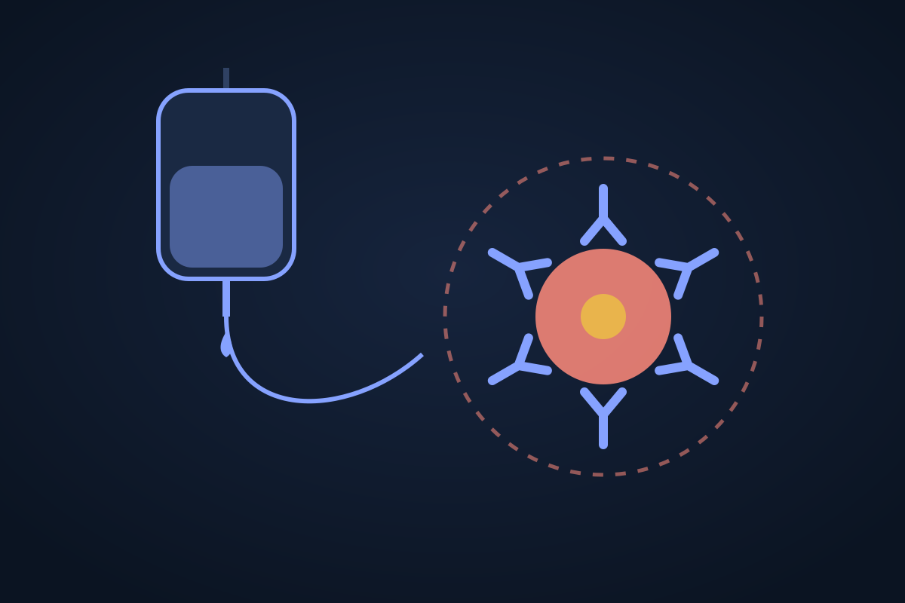

Edition 3, Tuesday 20 October 2026
FDA approves an immunotherapy that can spare some rectal cancer patients surgery
Dostarlimab alone won accelerated approval for a genetic subtype of locally advanced rectal cancer, after trials in which many patients' tumours vanished without chemotherapy, radiation or surgery.

The approval
The US Food and Drug Administration on Monday granted accelerated approval to GSK's dostarlimab, sold as Jemperli, as the sole treatment for adults with previously untreated stage II or III rectal cancer whose tumours are mismatch repair deficient or microsatellite instability-high, as found by an approved test. The FDA says about 3% of locally advanced rectal cancers fall into this group. Dostarlimab blocks PD-1, a switch that tumours use to hide from the immune system.
The review finished nearly four months early under the commissioner's national priority voucher pilot. The usual treatment for these patients is chemotherapy, radiation and surgery, which the new approach may let some avoid.
The evidence
The approval rests on interim results from AZUR-1, a single-arm trial of 154 patients who received up to nine doses every three weeks. After more than two years' median follow-up, almost three-quarters did not need surgery, radiotherapy or chemotherapy, the FDA says. According to The ASCO Post, 47% of evaluable patients had no detectable tumour sustained for 12 months by independent review, and none of the responders had seen their cancer progress.
It is supported by the earlier Memorial Sloan Kettering study of 50 patients, in which no patient had detectable cancer after treatment and 93% stayed cancer-free for at least a year; of 27 followed for three years or more, one had a recurrence.
The caveats
Accelerated approval is conditional. Because the evidence comes from single-arm studies, GSK must keep following patients to show the responses last, and the FDA says longer follow-up is needed to know how often cancer returns. Like other immunotherapies, dostarlimab can cause the immune system to attack healthy organs, sometimes severely.
Why it matters
It is the first immunotherapy approved for locally advanced rectal cancer, and one that can let some patients skip chemotherapy, radiation and surgery entirely; it is also a model for organ-sparing care in other tumours with the same genetic profile. It applies to a small group, and how durable the responses are is still being measured.